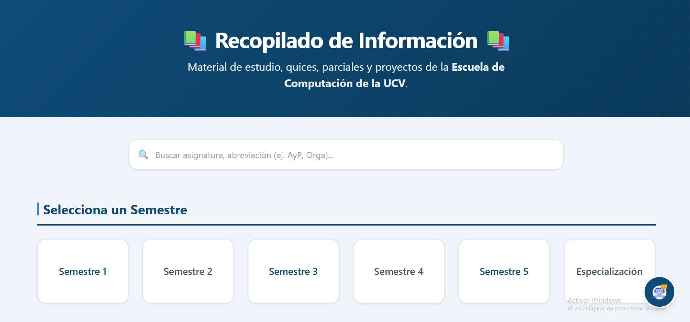

Recopilado de Información UCV
Plataforma web para centralización de recursos académicos por semestre.

Stack & Tecnologías Utilizadas
Descripción del Proyecto
Esta herramienta fue desarrollada para facilitar a los estudiantes el acceso organizado a guías, problemarios y parciales resueltos estructurados por semestres y materias.
Su diseño prioriza el rendimiento, permitiendo filtrados rápidos y una consulta fluida de los recursos almacenados en la nube.
Plataforma web interactiva para buscar material de estudio por semestres académicos y materias.
Cuenta con:
• Chat Bot integrado
• Barra de búsqueda
• Diseño Responsive
• Página 404
• Apartado Administrativo